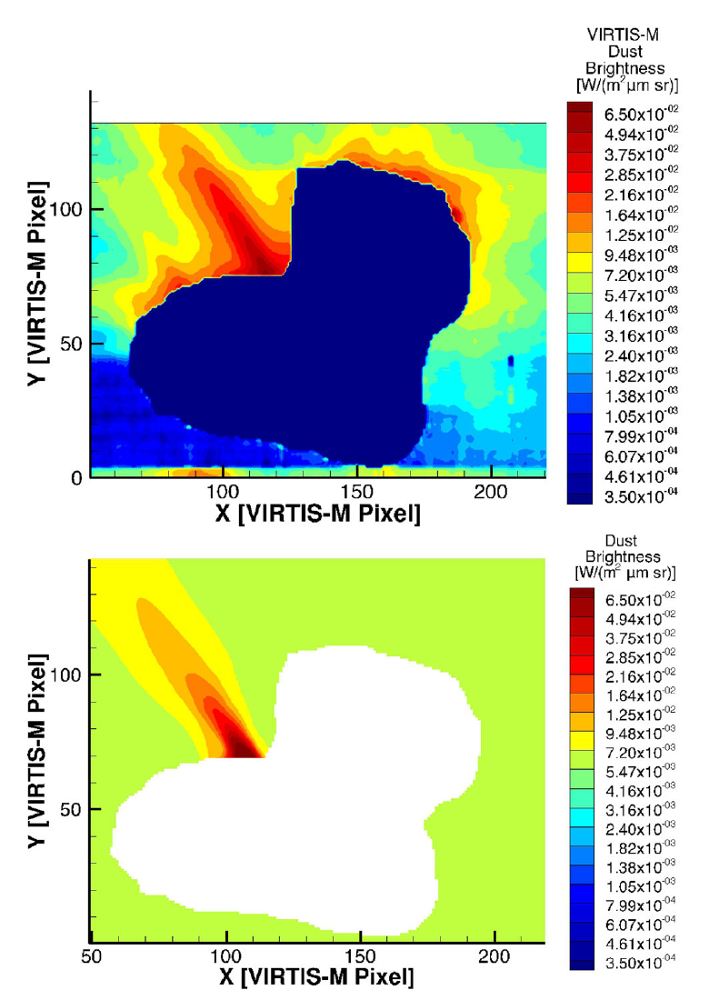
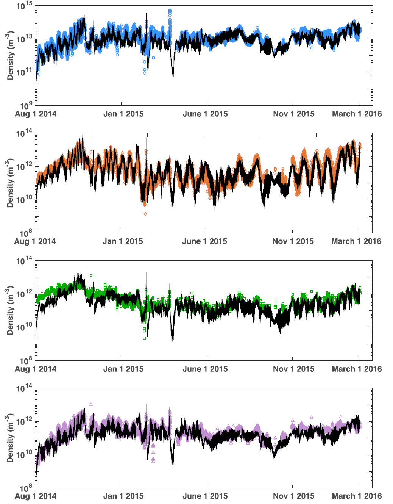

Research Overview

Introduction
A cometary coma is a complex and mutually interconnected system consisting of neutral gas, corresponding ions, cometary dust, and plasma. Due to the negligible gravity of a comet's nucleus, a coma has a characteristic size that exceeds the nucleus by many orders of magnitude. This extended dusty gas cloud is primarily affected by molecular collisions, radiation cooling, photolytic, charge-exchange, and impact-ionization reactions.
Comet 67P/Churyumov-Gerasimenko was the target of the Rosetta mission, which was the first mission to escort a comet along its way through the Solar system for an extended amount of time. The list of the main scientific objectives of the mission included the global characterization of the comet's nucleus, determination of the surface composition, and a study of the comet's activity development.
Our research applies advanced computational modeling techniques to understand the complex interactions between gas and dust in cometary comae. Using Direct Simulation Monte Carlo (DSMC) methods, we can accurately simulate the coma environment across all collisional regimes from the innermost vicinity of the nucleus to the collisionless outer coma.
Dust in Cometary Comae
Observations of comets have revealed a diverse population of dust particles in their comae. These dust particles can be broadly classified into two major categories:
- Compact particles: These range in diameter from 0.03 to 1 mm and constitute the majority of the dust mass ejected from the nucleus.
- Fluffy particles: With diameters between 0.2 and 2.5 mm, these particles provide a negligible contribution to the total dust mass ejection rate despite their large size.
In addition, smaller charged nanograins have been detected at cometocentric distances of 50-65 km. The charging of these nanograins is dominated by photoemission, electron collection, and secondary electron emission currents.
Analysis of dust particle dynamics has revealed that the submicron particle flux from the solar direction can exceed that from the direction to the comet's nucleus by a factor of 3. This suggests that charging and the Lorentz force may significantly affect dust particle dynamics, especially for smaller particles.
For comet 67P/Churyumov-Gerasimenko, measurements indicate a dust-to-gas mass ratio of 4 ± 2, with a differential size distribution power index of approximately -2.5. The total dust-loss rate was estimated to be approximately 7 ± 1 kg s-1 at heliocentric distances between 3.4-3.6 AU.
Modeling Approach
Our analysis of cometary comae is performed using the Adaptive Mesh Particle Simulator (AMPS) model, a sophisticated Monte Carlo code built within the framework of Direct Simulation Monte Carlo (DSMC) methods. This approach is particularly well-suited for cometary environments where the collision regimes vary from collision-dominated near the nucleus to fully collisionless in the outer coma.
Neutral Gas Modeling
Gas ejection rates from a comet's nucleus are primarily determined by energy balance and heat transfer in the uppermost layer of the nucleus. These rates are highly dependent on the comet's heliocentric distance and surface illumination conditions. The DSMC model accounts for the complex nucleus shape and self-shadowing effects, producing significantly different outgassing patterns on the day and night sides of the nucleus.
Our approach combines local illumination calculations with derived surface activity distributions to account for the non-uniformity of surface outgassing. For comet 67P, the water vapor source distribution was derived using a spherical harmonic expansion constrained by spacecraft data. This method has successfully reproduced observed gas distributions in previous studies and forms the foundation of our coupled gas-dust model.
Dust Particle Dynamics
Motion of dust particles in the vicinity of the nucleus is mainly determined by the competing forces of gas drag and gravity. For each dust particle, we calculate its position by integrating the equation of motion:
dvg/dt = (1/mg)(πa2CD/2)ρ(v-vg)|v-vg| - Fg
Where mg is the mass of a dust particle, CD is the drag coefficient, Fg is the gravity force, v is the bulk velocity of the ambient gas, vg is the velocity of the dust particle with radius a, and ρ and ρg are the mass densities of the ambient gas and dust particles, respectively.
Due to the complex shape of the comet nucleus, gravity calculations require numerical integration over the nucleus volume. To optimize computational efficiency, we precalculate gravity acceleration vectors at computational cell centers and interpolate these values to particle locations during simulation.
Our dust simulations use a dust mass density of 1000 kg m-3 and a power-law size distribution with an index of -2.5. Particle radii in our simulations range from 10-7 to 10-3 m. Only particles that can overcome local gravity based on the balance between surface gravity and gas drag are included in the coma model.
Analysis of Dust Jets
A significant focus of our research is the characterization of dust jets observed in cometary comae. These collimated structures provide important insights into the physical mechanisms of dust release, the relationship between gas and dust activity, and the properties of the nucleus surface.
Modeling Methodology
Our analysis of dust jets involves a two-stage approach:
- First, we simulate the dusty coma assuming a constant dust-to-gas mass ratio across the entire nucleus surface, tracking trajectories of hundreds of thousands of individual dust particles.
- Second, we calculate synthetic observations of the dust brightness as would be seen from the observing instrument's perspective, comparing these with actual observations to infer jet properties.
The dust brightness is calculated by integrating along the line of sight:
I(λ) = F(λ)∫n(r)σgqs(λ)(p(g)/4π)ds
Where F(λ) is the solar flux at the comet's location, n(r) is the dust number density, σg is the geometrical cross-section of a dust grain, qs(λ) is the scattering efficiency, and p(g) is the normalized phase function.
Key Findings from Rosetta VIRTIS-M Data
Our analysis of a prominent dust jet observed by Rosetta VIRTIS-M on 2015 April 12 revealed several important characteristics:
- The dust mass production rate needed to maintain the observed jet was approximately 1.9 kg s-1, which accounts for about 2.6% of the total dust ejection from the nucleus.
- The jet originated from an area outside of the region with maximum gas production, suggesting that gas and dust source rates are not necessarily proportional across the entire nucleus surface.
- The jet's surface footprint corresponds to a relatively small area, approximately 1.3% of the total nucleus surface.
- The observed jet showed temporal variability with a lifetime of at least 10 hours, indicating a dynamic dust release process.
These findings challenge the commonly accepted paradigm that dust release is solely determined by local illumination conditions and proportional to gas production. Instead, our results suggest that additional mechanisms, such as thermal stress, internal gas pressure, or structural features like active pits may play important roles in dust jet formation.
Derived water vapor source rate distribution on the surface of comet 67P/Churyumov-Gerasimenko.
Comparison between observed (top) and modeled (bottom) dust brightness for a jet observed by VIRTIS-M on 2015 April 12.
Densities extracted at the location of the spacecraft from the DSMC model (solid line in black) compared to the ROSINA data for H2O (blue), CO2 (orange), CO (green), and O2 (purple).